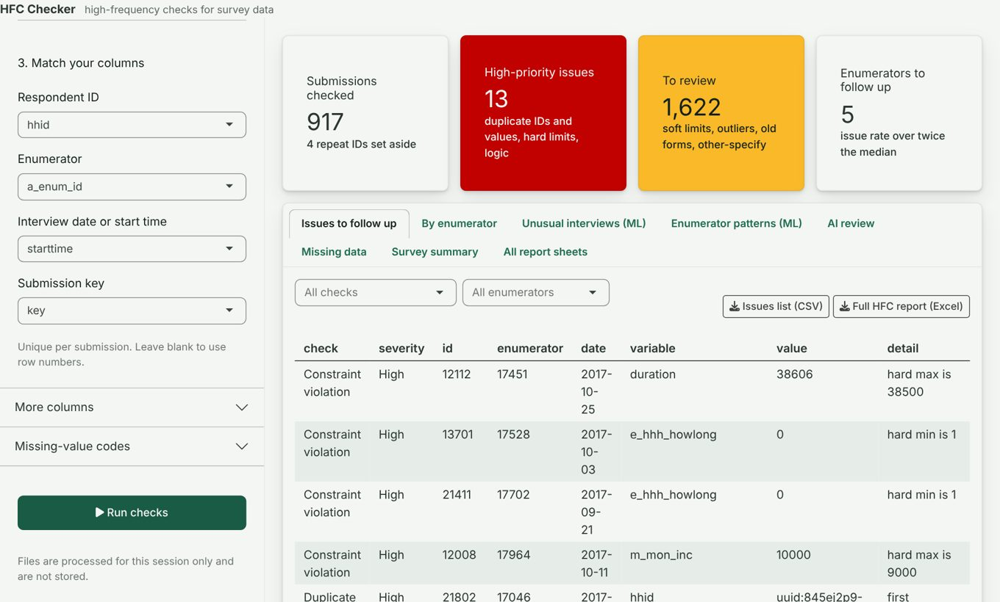

Open source · R · Shiny · webRLive · checked Nov 2026
HFC Checker
A high-frequency check (HFC) tool: upload the survey data your enumerators have submitted so far and get back a prioritised list of problems to follow up today. The checks run in the browser, so survey data is not uploaded to a server. The optional AI review is the one exception: it sends only the answers it reviews to Anthropic's API, using the user's own key.
Upload data match columns rule-based checks ML scoring issues list and enumerator ranking human review Excel report for follow-up
- Rule-based checks: duplicate IDs, outdated form versions, repeated GPS or phone values, missingness, outliers, constraint and logic violations, other-specify answers.
- Machine learning: an isolation-forest anomaly score for every interview, near-copy detection, and how far each enumerator's answers sit from everyone else's.
- LLM review (optional): uses Anthropic's Claude models (Claude Haiku or Claude Sonnet, through the Claude API with the user's own key) to suggest recodes for other-specify answers and write plain-language briefings for supervisors, with a person confirming every suggestion.
- How it was tested: on a 917-interview sample survey, one enumerator's interviews were modified so 12 copied one set of answers and were rushed (a quarter of normal length). All 12 were flagged and the enumerator ranked first for unusual answers. On the unmodified data, 1.4% of original interviews were flagged (the top 5% by anomaly score above 0.55, plus near-identical copies). This shows performance on one type of fabrication, not every type.
- Evaluating the LLM review: the tool includes a blind evaluation. A person codes the answers without seeing the AI's suggestions, and the tool reports agreement, Cohen's kappa and every disagreement. Until a coded sample is complete, its suggestions are treated as a first pass for a person to confirm.
Takes about 30 seconds to start while R loads in the browser. A sample survey is built in.

19check functionsR package with tests
Noapplication backendChecks run in the browser with webR
3layers of checksRules, machine learning, LLM review